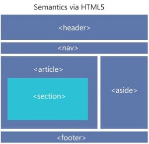

The Semantic Grid System, Yarının Sayfa Düzeni
HTML5 bildiğiniz gibi semantik etiketlerle birlikte geldi ama hala tam anlamıyla kullanmıyoruz. Başlayacağımız nokta tam olarak grid sistemleri olacak 960.gs vs.. tam olarak bu akıma uymadıklarını düşünüyordum ki başkası daha önce düşünmüş less ve sass mixin kütüphanesi olarak semantic grid sistemi oluşturmuş. Son zamanlarda pek güncellenmemiş olsa da halen kullanılabilir durumda.
Kullanabileceğiniz 4 adet değişken $column-width, $gutter-width, $columns, $total-width
4 adet de mixin var row, column, pull, push
En basit olarak şöyle bir sass kodundan
$column-width: 60px
$gutter-width: 20px
$columns: 12
$total-width: 100%
header
+column(12)
nav
+column(12)
section
+column(9)
aside
+column(3)
article
+column(12)
footer
+column(12)
Şöyle Bir haml kodundan
%header
%h2 Header
%nav
%h2 Menu
%section
%h2 Main
%aside
%article
%h2 aside
%article
%h2 aisde
%footer
%h2
Copyright © 2013
Hem fixed hem fluid olarak bu düzene ulaşabilirsiniz.

Gelelim asıl konuya yeni bourbon adlı bir mixin kütüphanesi çıktı aynı şekilde bu kütüphanenin neat adında şirin mi şirin mixinler içeren Semantik grid sistemi var üstteki konuyla ilgilendiyseniz bakmanızı (kullanmanızı) tavsiye ederiz.
comments powered by Disqus